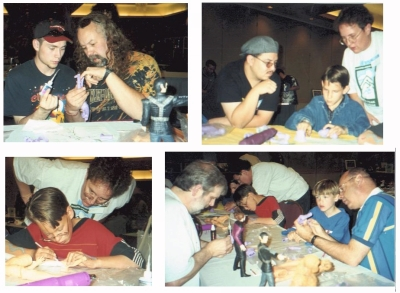

Collector's Fair Make-N-Take
Our first event took place May 3, 1998 at the "Collectors Fair" sponsored by the Helen Marie Wildlife Foundation. Seventeen new, young modelers were introduced to the hobby with vinyl kits from GEOMetric Design.
Our Special Guest was Anthony Mestas, owner of "Life Force Studios" in Pueblo, Colorado. Anthony also writes the "Makin' the Scene" articles in Amazing Figure Modeler.

(That's Anthony Mestas, with the beret on, in the upper right hand photo)